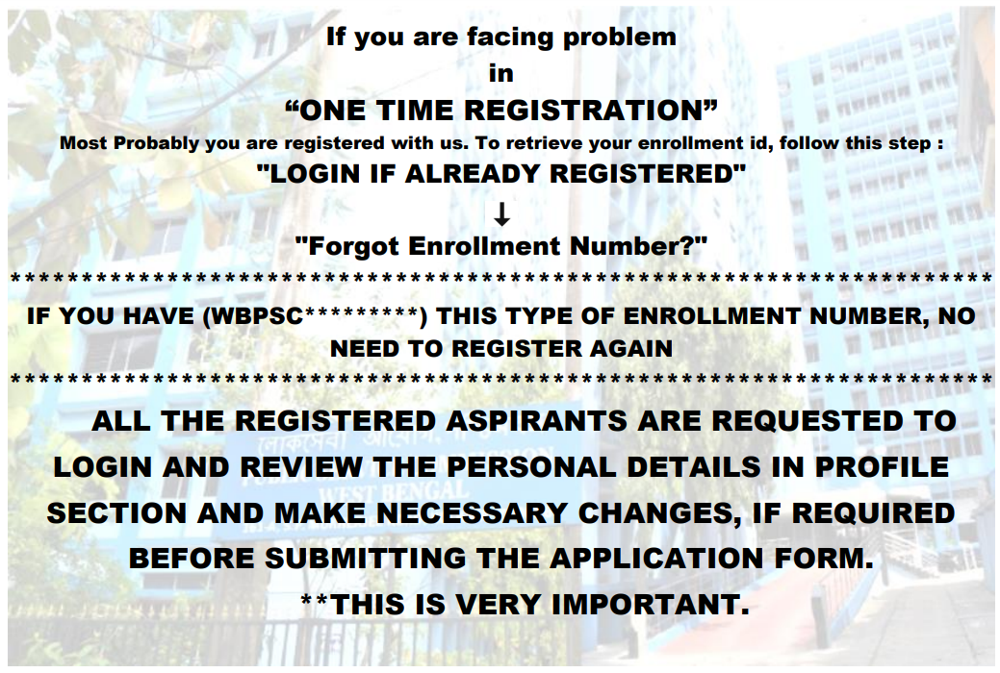

HOME
ABOUT PSC,WB
ADVERTISEMENT/ ANNOUNCEMENT
EXAMINATION
RESULT/ RECOMMENDATION
REFUND POLICY
TENDER
RTI
CONTACT US
Latest News
YOU CAN RETRIEVE YOUR "ENROLLMENT NUMBER" FROM THE LOG-IN SECTION. GO TO "LOGIN IF ALREADY REGISTRED" -> "FORGOT ENROLLMENT NUMBER?" ALL THE REGISTERED ASPIRANTS OF WBCS RECTT. EXAM., 2022 ARE REQUESTED TO LOGIN AND REVIEW THE PERSONAL DETAILS IN PROFILE SECTION AND MAKE NECESSARY CHANGES, IF REQUIRED BEFORE SUBMITTING THE APPLICATION FORM. THIS IS VERY IMPORTANT. APPLICANTS WHO HAVE ALREADY REGISTERED AT THIS WEBSITE NEED NOT REGISTER AGAIN. MULTIPLE REGISTRATIONS MAY LEAD TO CANCELLATION OF THE CANDIDATURE. THOSE WHO HAVE ENROLLED THEMSELVES AT WWW.PSCWBAPPLICATION.IN BEFORE, ARE REQUIRED TO REGISTER AFRESH AT THIS WEBSITE.
